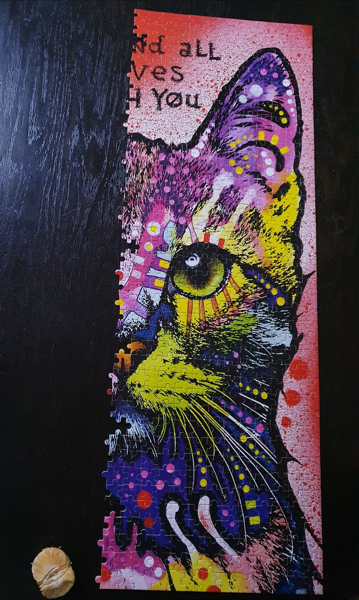
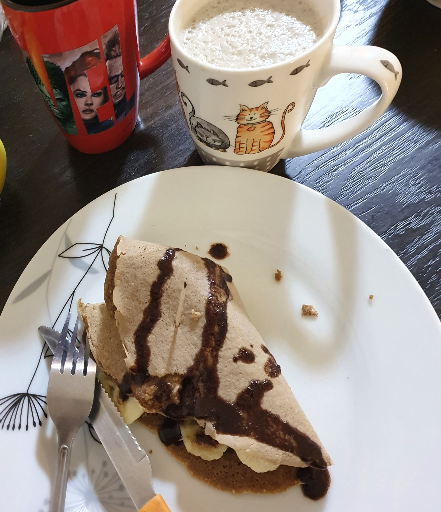
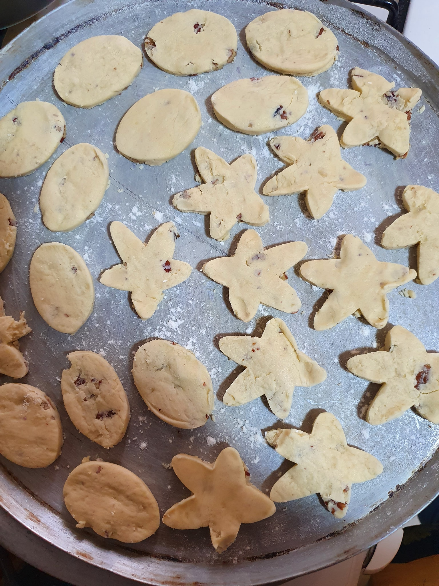
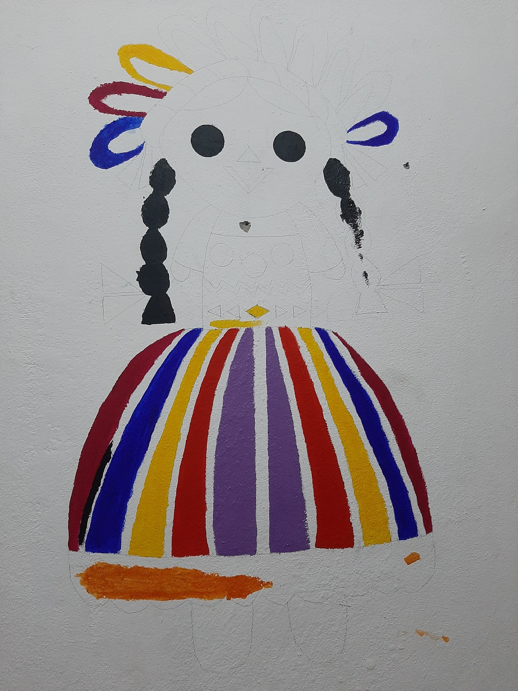

Cosas que puedes hacer en familia:
- Rompecabezas
 - Cocinar
 - Hacer galletas
 - Ver Peliculas
/cloudfront-us-east-1.images.arcpublishing.com/eluniverso/4FFPIIYGEFFX7OE2PPBXVE4YEQ.jpg)
- Pintar

¿Quieres aprender o practicar un segundo idioma de una forma divertida? Puedes hacerlo con esta página, presiona el botón para visitarla, suelo usarla mucho y aunque ahora principalmente lo haga por la escuela, he aprendido mucho vocabulario gracias a Duolingo.
Esta es una página que recién he descubierto, con ella puedes sentir como si estuvieras tocando una pieza musical en el piano o teclado. Toco el teclado y puedo decir que personalmente me llenó de la misma emoción como si tocara de verdad, aqui puedes presionar cualquier cosa, lo importante es el ritmo.
Esta página la visitaba demasiado cuando era más pequeña, se trata de un juego muy simple pero bastante adictivo, para ganar debes obtener la mayor cantidad de masa compitiendo con otros usuarios.
Ya que he estado bastante estresada en cuanto a mi tiempo y las acumulaciones de tarea he decidido seguir los consejos de este video para manejar de mejor manera mi vida, es bastante interesante y toca muchos puntos acerca la procrastinación

Por ultimo, un video que me anima a seguir practicando la guitarra y aprender mis canciones favoritas